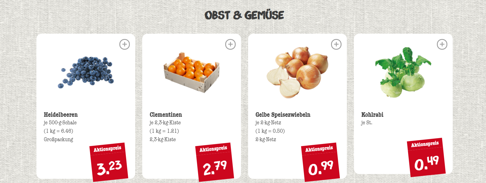
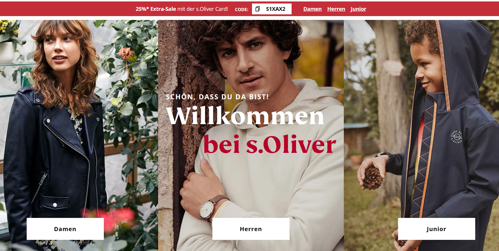
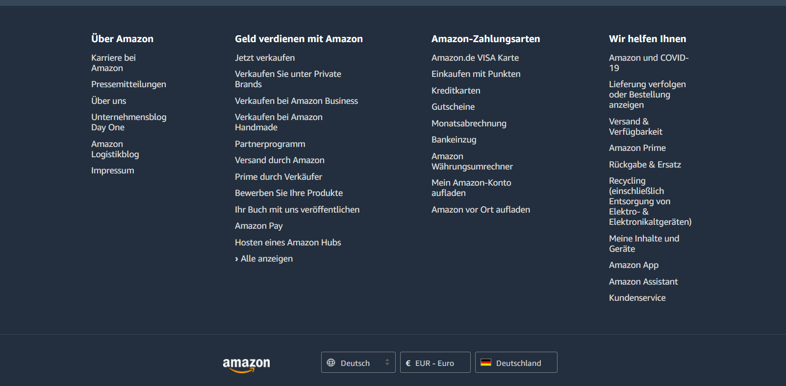

VeganerLand Dokumentation
Projektstellung
Im Rahmen der Veranstaltung "GWP & DWP" haben wir uns entschlossen, ein Online Shop
zum zwerk des Obst und Gemüse zu verkaufen. Ganz ohne nervige Babybilder und Katzenvideos.
Zielgruppe
Welche Personen hätten Interesse an unserer Seite?
- Personen, die Obst und Gemüse kaufen möchten
- Das Geschlecht ist in dem Fall nicht eindeutig zu identifzieren, da sowohl Frauen als auch Männer hier eine Kaufentscheidung treffen.
- Personen die in Deutschland Leben
- Für das Marketing bedeutet das, dass auf schrille und jugendliche Farben verzichtet werden sollten. Der Fokus sollte auf eine qualitativ hochwertige Produktdarstellung, d.h. Produktbilder, emotionale Bilder und ausführliche Produktbeschreibungen gesetzt werden.
Beschreibung der verwendeten tools für Projektinfrastruktur
Das VeganerLand Team hat folgende Software für die Herstellung der Webseite benutzt:
- Team-Kommunikation: WhatsApp, Discord, Cisco Webex Mettings
- Code: Visual Studio Code, phpStorm
- Server: XAMPP (Lokales Server für Datenbank + PHP)
- Projektmanagment: TortoiseGit (Im verbindung mit GitHub), Miro
- Browser: Google Chrome, Mozilla Firefox
- Datenbank: MySQLWorkbench + phpMyAdmin
Ergebnisse der Recherche von ähnliche Seiten
Als inspiration haben wir hauptsächlich 3 Seiten als Beispiel genommen
- www.nahkauf.de
-
für alle Obst und Gemüse darstellung
 - www.soliver.de
-
für Homepage und Seiten style
 - www.amazon.de
-
Inspiration für das Design von unserer Footer

Checklist
Allgemein GWP/DWP
Mindestens 6 Seiten- Taketec besitzt 15 Seiten
Mindestens 3 Unterseiten- Unterseiten von Login
- Profile
- Update Password
- Admin
- Delete User
- Add Article
Einheitliche Navigation- Header ist Semi-Statisch (Abhängig von Besucher)
- Ist immer im gleichen Stelle und gleiche maß
Navigation mit Untermenü- Top 10 hat zwei Untermenüs
Mindestens 3 Formulare- Einige Formulare (Nicht alle)
Vermeidung von doppelten Code- Wir haben alle Funktionen in /init/20.funtions.php auszulagern
Codestyle und Dokumentation- Alle notwendige Kommentare (für alle Funktionen und Code die nicht selbstverstänlich ist)
Keine Verwendung von FrameworksProjektdokumentation- Es wurde versucht die Dokumentation so ausführlich wie möglich zu machen
Installationshinweise- Zu Finden im \README.pdf
- Da sind auch die Logins vorhanden
Datenbank-Export- Zu Finden im \Projekt\src\database\taketec-pdo-version-1.sql
- Dazu sind auch ältere Versionen von dem Datenbank
Test- Chrome: 24 Zoll Monitor, 14 Zoll Monitor
- Edge: 24 Zoll Monitor, 14 Zoll Monitor
- Chrome Dev-Tools: iPhone X, Pixel 2


Allgemein GWP
Passende, abwechslungsreiche GestaltungInteraktivität schaffen mit CSS/JavasCript- Es wurde versucht, einfaches und klares Design zu erstellen
Quelltext Optimierung durch Metas, Alt, Title, Noscript- alt Attribut wurde bei allen Bilder als Quelle eingesetzt
Sinvolle Verwendung von HTML5- Nav, header und footer wurden in der Implementierung benutzt
Einbindung von Bilder- Die Einbindung von Bildern geht dynamisch durch php, der Admin soll die Name des Bildes
die Nameendung beim Artikelhinzufügen geben und das Bild in Projekt/assets/images/ speichern Responsive Webdesign- Optimiert für Bildschrirme kleiner und gröser als 720px
- Für die Auslösung der Laptops und Handys
Allgemein DWP
Formulare werden mittels PHP/JS behandelt und Fehler angezeigt- Alle Formulare werden clientseitig mittels JavaScript und HTML required Attribut geprüft,
dann werden sie zum server gesendet und da werden sie nochmal mittels PHP gecheckt.
HTMLspecialchars wurde auch verwendet und bei der Eingabefehler wurden die Daten des Nutzers
behalten bei Fehler Nutzeranmeldung- Gilt durch E-mail (Wenn nicht bereit registriert in der Datenbank) und Password (RegEx)
Nutzerregistrierung- Bei der Registrierung des Nutzers wird es geprüft, ob die eingegebene E-Mail Adresse schon in der Datenbank
vorhanden ist, wenn ja wird der Nutzer eine Mitteilung bekommen, dass er bereits bei uns registriert ist Funktionsbereitstellung mit/ohne JS- Die Seitefunktionalität arbeitet komplett ohne Javascript.
noscript Tag wurde auch benutzt Absenden von Formulare mit AJAX- Wurde Implementiert aber leider hat nicht funktioniert (das Code ist noch zusehen)
Siehe contact.php/contact.js und registration.php/registration.js Seiten werden dynamisch ausgebaut (Datenbank)- Home, topTen, readArticle, buy Article und profile werden alle aus der Datenbank gebaut
- Nachlade Funktion mit JS
- Wir wollten in HomePage die anzahl von Artikel auf 4 reduzieren. Wenn der nutzer gescrollt
hat, sollten mehrere Artikel von dem Datenbank herausgeholt. Leider hat diese Funktion
bei uns nicht funktioniert. Alles was wir in Netzt gefunden haben, brauchte JQuery.
Hier was uns gefehlt hat, war eigentlich Zeit. Seite Nicht gefunden (404)- Bei einem falschen Seitename, wird 404 aufgerufen und von dort wurde ein Link zu Home gebaut
Hinweis: Es lohnt sich, die sich anzugucken Datenbank angebunden- Mittels PDO und bereitgestellte Funktionen in 20_function.php
Daten werden von Datenbank gelesen- Wird überall gemacht. Beispiel dafür ist die Ausgabe von Artikeln im HomePage
Daten werden in Datenbank geschrieben- Passiert in mehrere Orten. Beispiel dafür ist die Eingabe bei Registrierung
Wireframe & Sitemap
überlegung für das Wireframe von Home

Sitemap

Design
Farbenauswahl
- #27313a -> Dunkles Grün
- #00a19c -> Helles Grün
- #ffffff -> Weiß
Logo
Favicon
Layout
In unserer Website wird über Handys, Laptops und tablets gesprochen,
damit der Inhalt und die Gestaltung zusammenpassen haben wir das Logo und die Navigation
eher technisch gehalten. Das einfache Design unseres Layouts, spricht eine Junge Zielgruppe an
da es durch die Überschaubarkeit und Abstraktion modern wirkt.
Schrifftarten
- PT_Sans_Caption
- Offside
- MontserratRegular
Seiten Funktionalitäten
MVC


Home Seite

Admin Seite

Artikel Kaufen Seite

Login Seite

Profile Seite

Read Article Seite

ER-Modell

Rollen Modell

Herausforederungen
-
Viele Projektideen am anfang des Semesters:
die Lösung: was macht am meisten Spaß beim Implementieren und gleichzeitig deckt die ganzen Anforderungen ab -
Zeitgrenze: viele ideen über das Projekt, die wir nicht in der Zeit schaffen können
die Lösung: Die Anforderungen in 3 Teile abteilen:- Musskriterien
- Wünschkriterien (wenn es Zeit am Ende bleibt)
- Abgrenzungkriterien
-
am Anfang jeder großen Aufgabe sieht aus, als sie unmöglich zu machen
die Lösung: Diese Aufgabe in kleinerer Teilaufgaben teilen und sofort mit einem Teil anfangen
Besonderheiten
-
Random Seite: es wird jedes Mal, wenn auf Random im Nav geklickt ist, ein neuer Artikel gezeigt.
durch eine Funktion wird die Vorhandene Artikel in Datenbank gelesen und einer gezeigt -
Top Ten Artikel: es wird nach der Likesanzahl oder nach der Kommentareanzahl die Artikel gefiltert
und die Top 10 Artikel angezeigt -
Search Bar: es könnte nach einem Wort im Inhalt der Artikel, des Teasers, des Titels oder
des Vornames der Admin gesucht werden -
Likes und Kommentare: der angemeldete Nutzer kann einen Artikel liken oder kommentieren. Der Kommentar wird sofort
unter dem Artikel mit dem Name des Nutzers gezeigt oder/und die Anzahl der Likes erhöht -
Geprüfte E-Mail: ein Nutzer, der sich schon in der Seite registriert hat, kann er sich nicht nochmal mit
der selbe E-mail Adresse registrieren und wird er darüber informiert - In index.php gibt es eine Feature, die automatisch der richtige JS und CSS Seite für die gewünschte Seite ladet.
- Manipulation von URI wurde behandelt, sodass nur die Seite dem Nutzer gezeigt werden, die er zugreiffen darf.
- Im Profile Seite wird der Avatar-Profilbild nach der Geschlecht der Nutzer dynamisch angepasst